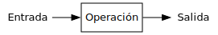

Expresiones
Ricardo Pérez López
IES Doñana, curso 2025/2026
1 Elementos de un programa
1.1 Expresiones y sentencias
El código fuente de un programa está formado por instrucciones.
Las instrucciones se clasifican en:
Expresiones: son secuencias de símbolos las cuales representan valores y están formados por datos y (posiblemente) operaciones a realizar sobre esos datos. El valor al que representa la expresión se obtiene evaluando dicha expresión.
Sentencias: son órdenes que sirven para pedirle al intérprete que ejecute una determinada acción.
Las sentencias pueden contener expresiones.
En muchos lenguajes de programación, una expresión por sí sola también es una sentencia válida, ya que expresan la orden de calcular el valor de la expresión.
\begin{array}{c} \text{En un programa hay dos} \\ \text{clases de instrucciones} \end{array} \begin{cases} \text{\textbf{Expresiones}} \begin{cases} \text{- Se evalúan} \\ \text{- Representan valores} \\ \text{- Están formadas por} \begin{cases} \text{\textbf{Datos}} \\ \text{\textbf{Operaciones}} \end{cases} \\ \text{- Por sí solas también pueden ser sentencias} \end{cases} \\\\ \text{\textbf{Sentencias}} \begin{cases} \text{- Son órdenes que provocan acciones} \\ \text{- Se ejecutan} \\ \text{- Pueden contener expresiones} \end{cases} \end{cases}
Las expresiones se evalúan y denotan un valor.
Las sentencias se ejecutan y provocan una acción.
1.2 Sintaxis y semántica de las expresiones
Definición:
Una expresión es una frase (secuencia de símbolos) sintáctica y semánticamente correcta según las reglas del lenguaje que estamos utilizando, cuya finalidad es la de representar o denotar un determinado objeto abstracto, al que denominamos el valor de la expresión.
El ejemplo clásico es el de las expresiones aritméticas:
Están formadas por secuencias de números junto con símbolos que representan operaciones aritméticas a realizar con esos números.
Denotan un valor numérico, que es el resultado de calcular el valor de la expresión tras hacer las operaciones que aparecen en ella.
Por ejemplo, la expresión
(2 * (3 + 5))denota un valor, que es el número abstracto dieciséis.
La sintaxis de las expresiones correctamente formadas deben satisfacer la gramática del lenguaje en el que están escritas.
Si una expresión es sintácticamente correcta, su semántica (es decir, su significado) es el valor al que representa.
En un lenguaje de programación existen muchos tipos de expresiones, dependiendo del tipo de los datos y de las operaciones involucradas en dicha expresión.
Empezaremos trabajando con las expresiones aritméticas más sencillas para ir incorporando cada vez más elementos nuevos que nos permitan crear expresiones más complejas.
Para ello, nos basaremos en la siguiente gramática, la cual es una simplificación modificada de la gramática real que deben satisfacer las expresiones en Python:
⟨expresión⟩ ::= ⟨operación⟩ | ⟨literal⟩ | ⟨nombre⟩
⟨operación⟩ ::=(⟨expresión⟩ ⟨operador_binario⟩ ⟨expresión⟩)
|(⟨operador_unario⟩ ⟨expresión⟩)
| ⟨llamada_función⟩ | ⟨llamada_método⟩
⟨nombre⟩ ::=identificador
⟨literal⟩ ::=entero|real|cadena| …
⟨operador_binario⟩ ::=+|-|*|/|//|**|%| …
⟨operador_unario⟩ ::=+|-| …
⟨llamada_función⟩ ::= ⟨función⟩([⟨lista_argumentos⟩])
⟨función⟩ ::=identificador
⟨llamada_método⟩ ::= ⟨objeto⟩.⟨método⟩([⟨lista_argumentos⟩])
⟨objeto⟩ ::= ⟨expresión⟩
⟨método⟩ ::=identificador
⟨lista_argumentos⟩ ::= ⟨expresión⟩(,⟨expresión⟩)*
Los símbolos terminales
identificador,entero,realycadenarepresentan cada uno de ellos a una multitud de secuencias de caracteres que siguen un determinado patrón.A las secuencias de caracteres que se ajustan al patrón léxico de un símbolo terminal determinado se les denomina lexemas.
Un
identificadores una secuencia de caracteres que puede estar formada por letras y dígitos, siempre y cuando empiece por una letra. Los identificadores representan nombres. Por ej.:x,n1odni.Un
enteroes una secuencia de dígitos sin punto decimal que representa a un número entero. Por ej.:25o140.Un
reales una secuencia de dígitos y otros caracteres especiales (el.o lae) que representa a un número real. Por ej.:12.4o4e3.Una
cadenaes una secuencia de caracteres encerrada entre comillas simples (') o dobles ("). Por ej.:"Hola"o'Juan Martínez'.
Normalmente, los espacios en blanco se usan para separar y distinguir los diferentes símbolos terminales. Así se sabe que
12representa al entero12y no a los dos enteros1y2.
Esta gramática reconoce expresiones totalmente parentizadas, en las que cada operación a realizar con operadores va agrupada entre paréntesis, aunque no sea estrictamente necesario, como por ejemplo:
(3 + (4 - 7))Otros ejemplos de expresiones que satisfacen dicha gramática:
24(4 + 5)(-(8 * 3.5))(9 * (x - 2))z(abs(-3) + (max(8, 5) / 2))
Sabemos que todas esas expresiones son sintácticamente correctas según nuestra gramática porque podemos construir derivaciones desde el símbolo inicial ⟨expresión⟩ hasta cada expresión.
Ejercicio
- Obtener las derivaciones correspondientes de cada una de las expresiones.
Muchas veces, de ahora en adelante representaremos las expresiones combinando distintos colores y estilos tipográficos con la única finalidad de facilitar la lectura y ayudar a reconocer los diferentes elementos sintácticos que las componen.
A esta técnica se la denomina resaltado de sintaxis.
Por ejemplo, las expresiones anteriores quedarían así:
(3 + (4 - 7))24(4 + 5)(-(8 * 3.5))(9 * (x - 2))z(abs(-3) + (max(8, 5) / 2))
2 Valores
2.1 Información, datos, tipos y valores
La Informática es la ciencia que estudia los sistemas de procesamiento automático de la información, también llamados sistemas informáticos.
Esos sistemas procesan la información de forma automática siguiendo las instrucciones de un programa.
Las instrucciones que forman el programa son las que dictan qué operaciones hay que realizar con la información.
Esa información se codifica, almacena y manipula en forma de datos.
Los datos, por tanto, son información codificada y almacenada en un formato y en un soporte adecuados para ser manipulados por un sistema informático.
Esos datos pueden ser:
Datos de entrada o salida, que representan información de interés para el usuario del programa y que, o bien se reciben del usuario o bien se envían al usuario, respectivamente.
Datos internos que usa el programa para su correcto funcionamiento.
El objeto abstracto que representa un dato en un momento dado (es decir, la información que actualmente «contiene» el dato) se denomina el valor del dato. Se dice que un dato posee (o tiene o contiene) un valor, o que vale ese valor.
Si el valor de un dato nunca cambia, decimos que ese dato es constante.
En cambio, si el valor de un dato puede cambiar durante el funcionamiento del programa, decimos que es un dato variable.
Los valores se agrupan en tipos, que son conjuntos de valores que comparten características comunes.
Entre esas características comunes destacan, principalmente:
La codificación usada para representar esos valores dentro del ordenador.
Las operaciones que se pueden realizar con esos valores.
El hecho de que representan el mismo concepto genérico.
Todo valor pertenece a un tipo.
Como cada tipo es un conjunto de valores, decimos que «un valor pertenece a un tipo» cuando pertenece a ese conjunto (o sea, cuando es uno de los elementos de ese conjunto).
Por ejemplo, el tipo entero representa el conjunto de los números enteros. Todos los números enteros pertenecen al tipo entero.
Cada tipo, además, determina qué operaciones se pueden realizar sobre valores de ese tipo.
En general, las operaciones sólo pueden actuar sobre valores de determinados tipos.
O dicho de otra forma: esas son las operaciones que tiene sentido realizar sobre esos valores.
Esto es así porque recordemos que las operaciones actúan como funciones que están definidas sobre un dominio, que es un subconjunto del conjunto origen. Ese conjunto origen sería, a grandes rasgos, el tipo de los valores sobre los que puede actuar.
Por ejemplo: sobre un valor de tipo cadena se puede realizar la operación longitud (pero no la raíz cuadrada), y sobre dos enteros se pueden realizar las operaciones de suma y producto. No tiene sentido sumar dos cadenas.
Igualmente, también decimos que los datos tienen un tipo, que es el tipo de los valores que puede tener el dato. Por eso, a los tipos también se les llama tipos de datos.
En cierta forma, el tipo de un dato es como una etiqueta, característica o atributo que va asociado al dato y que define una cualidad muy importante del mismo.
Se dice que «un dato es de un tipo», o que «un dato tiene un tipo» o que «un dato pertenece a un tipo» cuando ese dato tiene (o puede tener) un valor de ese tipo.
Dependiendo del lenguaje de programación utilizado, el tipo de un dato puede venir definido:
Implícitamente, como el tipo del valor que tiene actualmente el dato.
Explícitamente, asociando el tipo al dato mediante una instrucción especial llamada declaración.
Como los datos tienen (o representan) valores, las operaciones también pueden actuar sobre datos.
En realidad, lo que hacen las operaciones es actuar sobre los valores que tienen esos datos.
Por tanto, también se puede decir que las operaciones que se pueden realizar sobre un dato dependen del tipo de ese dato.
Y, por extensión, podemos decir que un tipo de datos:
es el conjunto de valores que puede tomar un dato de ese tipo, y
define también el conjunto de operaciones válidas que se pueden realizar sobre datos de ese tipo.
Tipo (o tipo de datos):
Es un conjunto de valores que, indirectamente, define también el conjunto de operaciones que se pueden realizar sobre esos valores.
Tipo de un dato:
Es el tipo que tiene ese dato, es decir, una característica o atributo del dato que define el conjunto de valores que puede tomar ese dato y, en consecuencia, también las operaciones que se pueden realizar sobre ese dato.
Los datos se pueden manipular dentro de un programa haciendo que formen parte de expresiones y evaluando dichas expresiones.
El valor de una expresión se obtiene a través del valor de los datos que contiene, y podemos manipular esos datos a través de las operaciones que actúan sobre ellos dentro de la expresión.
Por extensión, el tipo de una expresión es el tipo al que pertenece el valor de esa expresión.
Tipo de una expresión:
Es el tipo del valor resultante de evaluar dicha expresión.
Ejemplo
Supongamos que queremos representar en un sistema informático la edad de una persona.
Esa información la codificamos en un dato al que llamaremos edad.
Ese dato edad será un dato variable, ya que la edad de una persona cambia con el tiempo y, por tanto, el valor que contenga el dato podrá cambiar.
Por otra parte, la edad de una persona se puede representar mediante un número entero no negativo (mayor o igual que cero), así que el dato edad debería contener un valor que sea un número entero sin signo.
Por tanto, el tipo del dato edad es el conjunto de los números enteros sin signo y, en consecuencia, el valor del dato edad podría ser cualquiera de los números que están dentro de ese conjunto.
Si, por ejemplo, una determinada persona tiene una edad de 12 años, decimos que el valor del dato edad para esa persona es 12, o que su edad vale 12 (actualmente).
Dentro de un año, el valor de ese dato pasará a ser 13.
Por eso decimos que la edad es un dato variable.
En cambio, su fecha de nacimiento es un valor constante, ya que nunca cambia.
Recordemos que el tipo de un dato también determina las operaciones que podemos realizar con él, ya que (en principio) cada operación sólo actúa sobre datos de un determinado tipo.
Como el dato edad es un número entero, podemos realizar operaciones aritméticas sobre él. Por ejemplo, podemos restar la edad al año actual para averiguar el año de nacimiento de esa persona.
Los tipos de un lenguaje de programación tienen un nombre (un identificador) que los representa.
En Python, los tipos de datos básicos son los siguientes (entre paréntesis va el nombre que tienen cada uno de esos tipos en Python):
Números enteros (
int): los números (positivos o negativos) que sólo tienen parte entera, como el cuatro o el menos tres.Se corresponde más o menos con el símbolo matemático \mathbb{Z}, que representa el conjunto de los números enteros en Matemáticas.
Números reales (
float): los números (positivos o negativos) que tienen parte entera y parte fraccionaria, como el siete con cuatro o el menos ocho con diecisiete.Se corresponde más o menos con el símbolo matemático \mathbb{R}, que representa el conjunto de los números reales en Matemáticas.
Cadenas de caracteres (
str): secuencias de caracteres (letras, dígitos, símbolos, etc.), como nombres de personas, direcciones, o cualquier texto en general.Tuplas (
tuple): secuencias de valores que pueden pertenecer a distintos tipos.Lógicos (
bool): sólo contiene dos valores que representan dos posibilidades contrarias, como verdadero o falso, sí o no, encendido o apagado, etc.
Así, por ejemplo, cuando un dato es un número entero, en Python decimos que pertenece al tipo
int; cuando es una cadena, decimos que pertenece al tipostr; etcétera.Para indicar que un dato tiene (o pertenece a) un determinado tipo, se pueden usar distintas notaciones dependiendo del lenguaje empleado.
Por ejemplo, si queremos indicar que el dato edad es un número entero (es decir, que es de tipo entero), se puede representar así:
En Matemáticas:
edad \in \mathbb{Z}
En Teoría de tipos:
edad: \mathbb{Z}
En Python:
edad
:intEn Java:
int\,edad
2.2 Evaluación de expresiones
Evaluar una expresión consiste en determinar el valor de la expresión. Es decir, una expresión representa o denota el valor que se obtiene al evaluarla.
El tipo de la expresión es el tipo del valor de esa expresión.
Una subexpresión es una expresión contenida dentro de otra.
La evaluación de una expresión, en esencia, es el proceso de sustituir (o reescribir), dentro de ella, unas subexpresiones por otras que, según indiquen ciertas reglas, estén más cerca del valor final a calcular, y así hasta calcular el valor de la expresión al completo.
Al mismo tiempo, también se va calculando el tipo de sus subexpresiones (el tipo del valor de cada subexpresión) y, finalmente, se obtiene el tipo de la propia expresión, que será el tipo del valor de esa expresión.
Además de las expresiones existen las sentencias, que no poseen ningún valor y que, por tanto, no se evalúan sino que se ejecutan. Las sentencias son básicas en los paradigmas imperativos.
Podemos decir que las expresiones:
3(1 + 2)(5 - 2)denotan todas el mismo valor (el número abstracto tres, cuyo tipo es el conjunto de los números enteros).
Es decir: todas esas expresiones son representaciones diferentes del mismo ente abstracto.
Cuando introducimos una expresión en el intérprete, lo que hace éste es buscar la representación más simplificada o reducida posible.
En el ejemplo anterior, sería la expresión
3.Por eso a menudo usamos, indistintamente, los términos reducir, simplificar y evaluar.
2.3 Expresión canónica y forma normal
Los ordenadores no manipulan valores, sino que sólo pueden manejar representaciones concretas de los mismos.
Por ejemplo: utilizan la codificación binaria en complemento a dos para representar los números enteros.
Pedimos que la representación del valor resultado de una evaluación sea única.
De esta forma, seleccionaremos de cada conjunto de expresiones que denoten el mismo valor, a lo sumo una que llamaremos expresión canónica de ese valor.
Además, llamaremos a la expresión canónica que representa el valor de una expresión la forma normal de esa expresión.
Con esta restricción pueden quedar expresiones sin forma normal.
Recuerda
Se dice:
Expresión canónica de un valor.
Forma normal de una expresión.
Ejemplo
De las expresiones anteriores:
3(1 + 2)(5 - 2)que denotan todas el mismo valor abstracto tres, seleccionamos una (la expresión
3) como la expresión canónica de ese valor.Igualmente, la expresión
3es la forma normal de todas las expresiones anteriores (y de cualquier otra expresión con valor tres).Es importante no confundir el valor abstracto tres con la expresión
3que representa dicho valor.
Hay valores que no tienen expresión canónica:
Las funciones (los valores de tipo función).
El número \pi no tiene representación decimal finita, por lo que tampoco tiene expresión canónica.
Y hay expresiones que no tienen forma normal:
Si definimos inf = inf + 1, la expresión inf (que es un número) no tiene forma normal.
Lo mismo ocurre con 1\over0.
2.4 Formas normales y evaluación
Según lo visto hasta ahora, la evaluación de una expresión es el proceso de encontrar su forma normal.
Para ello, el intérprete evalúa la expresión reduciendo sus subexpresiones según las reglas del lenguaje y las operaciones que aparecen en ellas, buscando su forma normal.
El sistema de evaluación dentro del intérprete está hecho de tal forma que cuando ya no es posible reducir más la expresión es porque se ha llegado a la forma normal.
Recordemos que no todos los valores tienen forma normal.
El orden en el que se van reduciendo las subexpresiones no debería influir en el resultado de evaluar una expresión, así que debería dar igual elegir una u otra subexpresión.
De todas formas, los lenguajes de programación suelen imponer un orden concreto a la hora de evaluar las expresiones.
Tanto en Python como en Java (los dos lenguajes que veremos), el orden de evaluación es de izquierda a derecha (salvo excepciones):
Orden de evaluación de las expresiones:
Al evaluar una expresión, las subexpresiones que la forman siempre se evaluarán de izquierda a derecha.
El orden de evaluación de las subexpresiones es un asunto más complejo de lo que parece, y lo estudiaremos en profundidad en posteriores apartados.

Ejemplos
Evaluar la expresión
(2 + 3):La expresión está formada por un operador
+que actúa sobre las dos subexpresiones2y3. Por tanto, habrá que evaluar primero esas dos subexpresiones, siempre de izquierda a derecha:(2 + 3) # se evalúa primero 2 (que devuelve 2) = (2 + 3) # luego se evalúa 3 (que devuelve 3) = (2 + 3) # ahora se evalúa (2 + 3) (que devuelve 5) = 5El
+por sí solo no se evalúa, ya que no es una expresión válida.
Por tanto, la expresión
5es la forma normal de la expresión(2 + 3), y ambas representan al valor cinco, que es un valor de tipo entero.Asimismo, decimos que
5es la expresión canónica del valor cinco, de tipo entero (es la expresión que mejor representa a ese valor).
Evaluar la expresión
(2 + (3 * 5)):La expresión está formada por un operador
+que actúa sobre las dos subexpresiones2y(3 * 5).La segunda subexpresión, a su vez, está formada por un operador
*que actúa sobre las dos subexpresiones3y5.Todas las subexpresiones se evalúan siempre de izquierda a derecha, a medida que se van reduciendo:
Por tanto, la expresión
17es la forma normal de la expresión(2 + (3 * 5)). Ambas representan al valor diecisiete, que es un valor de tipo entero, pero17es la expresión canónica de ese valor.
Evaluar la expresión
((2 + 5) * 3):La expresión está formada por un operador
*que actúa sobre las dos subexpresiones(2 + 5)y3.La primera subexpresión, a su vez, está formada por un operador
+que actúa sobre las dos subexpresiones2y5.Todas las subexpresiones se evalúan siempre de izquierda a derecha, a medida que se van reduciendo:
Por tanto, la expresión
21es la forma normal de la expresión((2 + 5) * 3). Ambas representan al valor veintiuno, que es un valor de tipo entero, pero21es la expresión canónica de ese valor.
De ahora en adelante, para simplificar las explicaciones, a menudo usaremos la expresión canónica de un valor como si fuera el valor mismo, cuando ya sabemos que, en realidad, no son lo mismo.
Por ejemplo: diremos «el valor
21» cuando, en realidad,21no es el propio valor veintiuno, sino una expresión que representa al valor veintiuno.Esto lo haremos en contextos donde no haya confusión, y siempre entendiendo que cuando decimos «el valor
21» nos referimos al valor que representa la expresión21.
2.5 Literales
Los literales constituyen las expresiones más sencillas del lenguaje.
Un literal es una expresión simple que denota un valor concreto, constante y fijo, escrito directamente en la expresión y ya totalmente reducido (o casi) a su expresión canónica.
Los literales tienen que satisfacer las reglas léxicas del lenguaje, que son las que determinan qué forma pueden tener los componentes léxicos del programa (como números, cadenas, identificadores, etc.).
Esos componentes léxicos son los símbolos terminales de la gramática del lenguaje.
Gracias a esas reglas, el intérprete puede identificar qué literales son, qué valor representan y de qué tipo son.
Ejemplos de distintos tipos de literales:
Números enteros (tipo int)Números reales
(tipofloat)Cadenas
(tipostr)-23.5"hola"-1-2.7'pepe'0"25"1""2Algunas reglas léxicas son:
Si el número tiene un
.decimal, es que es un número real.Si algo va entre comillas (simples
'o dobles") es que es una cadena.
En apartados posteriores estudiaremos los tipos de datos con más profundidad.
Con frecuencia, un literal resulta ser la expresión canónica del valor al que denotan y la forma normal de todas las posibles expresiones que denotan ese valor.
Por consiguiente, suelen estar ya totalmente simplificados.
Por ejemplo, el
3.5es un literal que denota el valor numérico tres y medio, es su expresión canónica y es la forma normal de cualquier expresión que denote dicho valor.Por tanto, el literal
3.5es la forma más reducida de representar el valor tres y medio.Es decir: si le pedimos al intérprete que calcule el resultado de
7 / 2, nos devolverá la expresión3.5.Sin embargo, el
3.5no es el único literal que denota el valor numérico tres y medio. Por ejemplo, los literales3.50,3.500o03.50también denotan ese mismo valor, pero la forma normal de todos ellos es3.5.O sea: hay varias maneras de escribir un literal que denote el valor tres y medio, pero sólo el literal
3.5es la forma normal de todas ellas.
Igualmente, la forma normal de todas las posibles expresiones que denotan el valor numérico dos es el literal
2.El literal
2es la forma más reducida de representar el valor dos.Pero no es el único literal que denota dicho valor.
El literal
02no es correcto según las reglas léxicas del lenguaje, pero sí que podemos usar la expresión0b10, que es un literal que representa el valor dos escrito en binario.Igualmente, las reglas léxicas del lenguaje permiten usar el carácter
_dentro de un número, por lo que el valor numérico cuatro millones se puede representar con el literal4_000_000, si bien su forma normal sigue siendo simplemente4000000.Finalmente, las cadenas se pueden escribir con comillas simples (
') o dobles ("), pero la forma normal de una cadena siempre usa las simples (salvo que la propia cadena incluya una comilla simple como un carácter más, en cuyo caso se usarán las comillas dobles en su forma normal).
2.6 Identificadores
Los identificadores son nombres que representan elementos dentro de un programa.
Por ejemplo, el nombre de una función es un identificador porque representa a la función.
Los identificadores deben cumplir unas reglas léxicas que dependen del lenguaje de programación, pero generalmente se resumen en que:
Pueden estar formados por combinaciones de letras, dígitos y algunos caracteres especiales como
_(por ejemplo,salida_principal23).No pueden empezar con un dígito, ya que eso los confundiría con un número (por ejemplo,
9abc).La mayoría de los lenguajes distinguen las mayúsculas de las minúsculas, por lo que
cantidad,CantidadyCANTIDADson normalmente identificadores distintos (así ocurre en Python y Java).
3 Operaciones
3.1 Clasificación
Ya hemos visto que en una expresión puede haber:
Datos (constantes o variables).
Operaciones a realizar sobre esos datos.
A su vez, las operaciones pueden aparecer en forma de:
Operadores
Funciones
Métodos
\text{En una expresión hay} \begin{cases} \text{Datos} \begin{cases} \text{Constantes} \\ \text{Variables} \end{cases} \\ \text{Operaciones} \begin{cases} \text{Operadores} \\ \text{Funciones} \\ \text{Métodos} \end{cases} \end{cases}
Matemáticamente, una operación se corresponde con el concepto de función.
En Matemáticas, una función es una regla que asocia a cada elemento de un conjunto (el dominio) exactamente un elemento (ni más ni menos) de un segundo conjunto (el codominio o rango).
A su vez, las funciones están definidas sobre un conjunto origen y un conjunto imagen.

En Programación, el concepto de operación es también similar al de función matemática, pero con su propia terminología y funcionamiento.
Desde el punto de vista de la Programación, las operaciones son dispositivos que transforman datos de entrada en datos de salida:

Esos datos de entrada se denominan argumentos u operandos, según la forma de la operación.
Asimismo, los datos de salida representan el resultado o valor de retorno de la operación.
El valor de retorno se calcula como resultado de procesar los datos de entrada y, por tanto, depende de la operación a realizar y de los datos recibidos por la entrada.
Visto así, las operaciones son subprogramas, es decir, porciones de código que actúan como pequeños programas dentro de otros programas, ya que siguen el esquema de «entrada - proceso - salida» como cualquier programa.
Los operadores, las funciones y los métodos no son más que diferentes formas sintácticas de expresar una operación.
En la práctica, apenas hay diferencias sustanciales entre las tres formas.
Por ejemplo, la operación «cuadrado» actúa asociando cada número real con otro número real: el cuadrado del número (el número multiplicado por sí mismo).
Así, esa operación asocia el número 4 con el 16, y el 7 con el 49.
Aquí, tanto el dominio como el codominio de la operación serían \mathbb{R}, el conjunto de los números reales.
Por tanto, podemos definirla diciendo que es una función que asocia \mathbb{R} (su conjunto origen) con \mathbb{R} (su conjunto imagen), lo que se puede representar así: cuadrado: \mathbb{R} \longrightarrow \mathbb{R}
Otro ejemplo sería la operación «inverso», que asocia a cada número real otro número real: el inverso del número (1 dividido entre el número).
Así, esa operación asocia el número 4 con el 0.25 (\frac{1}{4}) y el 5 con 0.2 (\frac{1}{5}).
El conjunto origen y el conjunto imagen siguen siendo \mathbb{R}.
Pero, en este caso, el dominio no coincide con el conjunto origen, ya que no existe el inverso del número 0 (\frac{1}{0}) («inverso» es una operación parcial). Por tanto, el conjunto origen podrá ser \mathbb{R} pero su dominio deberá excluir al cero: \textrm{dom}(inverso) = \mathbb{R} \setminus \{0\}
(En cambio, el conjunto imagen sí coincide con el codominio.)
En consecuencia, podemos definir la función de la siguiente manera: inverso: \mathbb{R} \longrightarrow \mathbb{R}
sabiendo que el dominio de la función no contiene a todo el conjunto origen (el cero no está).
Otro ejemplo sería la operación «suma», que asocia a cada pareja de números reales otro número real: la suma de ambos.
Esa operación asocia, por ejemplo, los números 2 y 3 con el número 5.
En este caso, el dominio de la operación «suma» sería el producto cartesiano del conjunto de los números reales consigo mismo (es decir, el conjunto \mathbb{R} \times \mathbb{R} formado por parejas de números reales).
Por tanto, podemos definir la operación «suma» diciendo que es una operación que asocia \mathbb{R} \times \mathbb{R} (su conjunto origen) con \mathbb{R} (su conjunto imagen), lo que se puede representar así: suma: \mathbb{R} \times \mathbb{R} \longrightarrow \mathbb{R}
En Programación, las operaciones no se definen sobre conjuntos, sino sobre tipos.
Por ejemplo, la operación «suma» podría definirse sobre sobre el tipo
floatde Python, que es el más parecido al conjunto \mathbb{R} de los números reales.Eso se podría representar así:
suma:
float\timesfloat\longrightarrowfloatPero, en la práctica, usaremos una notación más apropiada para representar los tipos sobre los que se definen las operaciones en nuestros programas y nuestros lenguajes de programación.
Esa notación, llamada signatura, la estudiaremos en breve.
3.2 Operadores
Un operador es un símbolo o palabra clave que representa una operación a realizar sobre unos datos.
Los datos sobre los que actúa un operador se denominan operandos.
Por ejemplo, los operadores aritméticos
+,-,*y/, cuando actúan sobre operandos numéricos, representan las operaciones de suma, resta, multiplicación y división, respectivamente.En la expresión
(3 + 4):Los operandos son
3y4.El operador es
+y representa la operación «suma de números».
En la expresión
(9 * 8):Los operandos son
9y8.El operador es
*y representa la operación «multiplicación de números».
Por tanto, la operación «suma» de la que hablamos anteriormente, se puede representar matemáticamente de la siguiente forma usando el operador
+: \_\texttt{+}\_: \mathbb{R} \times \mathbb{R} \longrightarrow \mathbb{R}Eso significa que el operador
+acepta dos operandos (dos números reales) y devuelve un número real.
3.2.1 Aridad de operadores
La aridad de un operador es el número de operandos sobre los que opera.
Los operadores se clasifican según su aridad en:
Unarios: operan sobre un único operando.
Por ejemplo, el operador
-de cambio de signo:(-(5 + 3)).Binarios: operan sobre dos operandos.
Por ejemplo, la mayoría de los operadores aritméticos.
Ternarios: operan sobre tres operandos.
Veremos un ejemplo más adelante.
3.2.2 Notación de los operadores
La notación de un operador indica en qué posición se escribe dicho operador con respecto a sus operandos en una expresión.
Los operadores se pueden escribir:
Con notación prefija: cuando el operador se escribe antes que los operandos.
Es el que se usa habitualmente para los operadores unarios, como el operador
-de cambio de signo.Con notación infija: cuando el operador se escribe entre los operandos.
Es el que se usa habitualmente para los operadores binarios.
Con notación postfija: cuando el operador se escribe después que los operandos.
Se usa poco en la práctica, salvo casos especiales.
3.2.3 Paréntesis
Los paréntesis sirven para agrupar elementos dentro de una expresión y romper la posible ambigüedad que pueda haber respecto a qué operador actúa sobre qué operandos.
Se usan, sobre todo, para hacer que varios elementos de una expresión actúen como uno solo (una subexpresión) al realizar una operación.
Por ejemplo:
((3 + 4) * 5)vale35(3 + (4 * 5))vale23
Una expresión está correctamente parentizada si tiene los paréntesis bien colocados según dicta la gramática del lenguaje.
Una expresión está totalmente parentizada si agrupa con paréntesis a todas las operaciones con sus operandos.
Hasta ahora, según nuestra gramática, las expresiones correctamente parentizadas son precisamente las que están totalmente parentizadas.
Por ejemplo:
2 +) 3 *( 5(no está correctamente parentizada.(4 + (2 * 5))está correcta y totalmente parentizada.2 + 5no está totalmente parentizada y, por tanto, no está correctamente parentizada según nuestra gramática.
Para reducir la cantidad de paréntesis en una expresión, podemos cambiar nuestra gramática acudiendo a un esquema de prioridades y asociatividades de operadores.
Haciendo eso, ya no hará falta exigir que las expresiones estén totalmente parentizadas.
3.2.4 Prioridad de operadores
En ausencia de paréntesis, cuando un operando está afectado a izquierda y derecha por operadores de distinta prioridad, se aplican las reglas de la prioridad:
El
4está afectado a izquierda y derecha por los operadores+y*, que tienen distinta prioridad, por lo que se aplican las reglas de la prioridad. El*tiene más prioridad que el+, así que se agrupa con el*. Equivale a:Si hiciéramos:
el resultado sería distinto.
Ver prioridad de los operadores en Python en https://docs.python.org/3/reference/expressions.html#operator-precedence.
3.2.5 Asociatividad de operadores
En ausencia de paréntesis, cuando un operando está afectado a izquierda y derecha por operadores de la misma prioridad (o por el mismo operador), se aplican las reglas de la asociatividad:
El
4está afectado a derecha e izquierda por el mismo operador/, por lo que se aplican las reglas de la asociatividad. El/es asociativo por la izquierda, así que se agrupa con el operador que está a la izquierda. Equivale a hacer:Si hiciéramos:
el resultado sería distinto.
En Python, todos los operadores son asociativos por la izquierda excepto el
**, que es asociativo por la derecha.
Por ejemplo, en este caso tenemos a un operando (el
3) afectado a derecha e izquierda por el mismo operador (el**), por lo que, de nuevo, tenemos que aplicar las reglas de la asociatividad:Pero como el operador
**es asociativo por la derecha, se agrupa con el operador de la derecha, resultando equivalente a hacer:
En este ejemplo, el mismo operando (el
4) está afectado a derecha e izquierda por distintos operadores (el*y el/), pero estos operadores tienen la misma prioridad, así que, de nuevo, tenemos que aplicar las reglas de la asociatividad:Los operadores (
*y/) son asociativos por la izquierda, por lo que, nuevamente, el4se agrupa con el operador que está a la izquierda, lo que equivale a hacer:
En todos los casos, es necesario que ambos operadores tengan la misma asociatividad.
Podríamos plantearnos ahora qué ocurriría si los dos operadores tuvieran la misma prioridad pero distinta asociatividad.
Por ejemplo, supongamos que tenemos dos extraños operadores
&y@.Ahora mismo no nos interesa saber qué hacen; sólo que ambos tienen la misma prioridad pero distinta asociatividad.
Para este ejemplo, supongamos que
&es asociativo por la izquierda y@por la derecha).
En ese caso, sería imposible interpretar correctamente la siguiente expresión, ya que un operador dice que hay que agrupar por la izquierda pero el otro dice lo contrario:
Y lo mismo ocurriría con esta expresión:
Si se diera un caso así, sería porque el lenguaje no está bien diseñado, ya que la gramática del lenguaje no aclararía con qué operador hay que agrupar en casos así.
De hecho, se nos estaría obligando a usar paréntesis para dejar claro cómo se agrupan los elementos que forman la expresión.
Por eso, lo normal es que los operadores que tienen la misma prioridad tengan también la misma asociatividad.
También puede ocurrir que existan operadores que no son asociativos ni por la derecha ni por la izquierda.
Tales operadores se dice que son no asociativos.
En Python no hay ningún operador no asociativo, pero, por ejemplo, en el lenguaje PHP existen varios operadores que sí lo son, entre ellos
==.Por tanto, la siguiente expresión en PHP sería incorrecta y daría lugar a un error sintáctico:
Tendríamos que usar paréntesis para dejar claro cómo se deben agrupar los elementos que forman la expresión, lo que daría lugar a dos posibles expresiones distintas:
Incorporando las reglas de la prioridad y la asociatividad, y eliminando la necesidad de que las expresiones estén totalmente parentizadas, nuestra gramática quedaría ahora sí:
⟨expresión⟩ ::= ⟨operación⟩ | ⟨literal⟩ | ⟨nombre⟩ |(⟨expresión⟩)
⟨operación⟩ ::= ⟨expresión⟩ ⟨operador_binario⟩ ⟨expresión⟩
| ⟨operador_unario⟩ ⟨expresión⟩
| ⟨llamada_función⟩ | ⟨llamada_método⟩
⟨nombre⟩ ::=identificador
⟨literal⟩ ::=entero|real|cadena| …
⟨operador_binario⟩ ::=+|-|*|/|//|**|%| …
⟨operador_unario⟩ ::=+|-| …
⟨llamada_función⟩ ::= ⟨función⟩([⟨lista_argumentos⟩])
⟨función⟩ ::=identificador
⟨llamada_método⟩ ::= ⟨objeto⟩.⟨método⟩([⟨lista_argumentos⟩])
⟨objeto⟩ ::= ⟨expresión⟩
⟨método⟩ ::=identificador
⟨lista_argumentos⟩ ::= ⟨expresión⟩(,⟨expresión⟩)*Ahora, cualquier expresión puede llevar paréntesis si es necesario, pero si no son necesarios se pueden omitir.
3.2.6 Paréntesis y orden de evaluación
Es importante entender que los paréntesis sirven para agrupar elementos, pero por sí mismos no son suficientes para imponer un determinado orden de evaluación.
Por ejemplo, en la expresión
4 * (3 + 5), el intérprete intenta hacer el producto de4por(3 + 5), pero no puede hacerlo hasta haber calculado primero la suma de3y5.Por eso el intérprete calcula primero la suma y finalmente hace el producto, porque para hacer el producto primero necesita haber reducido sus operandos a dos números que se puedan multiplicar.
El efecto final es que parece que los paréntesis han obligado a hacer primero la suma, como si los paréntesis fuesen una especie de operador cuya finalidad es la de aumentar la prioridad de lo que hay dentro.
En concreto, la evaluación de esa expresión sería:
Sin paréntesis, la expresión
4 * 3 + 5se evaluaría así:4 * 3 + 5 # se evalúa 4 (que devuelve 4) = 4 * 3 + 5 # se evalúa 3 (que devuelve 3) = 4 * 3 + 5 # se evalúa 4 * 3 (que devuelve 12) = 12 + 5 # se evalúa 5 (que devuelve 5) = 12 + 5 # se evalúa 12 + 5 (que devuelve 17) = 17Aquí se puede hacer el producto antes que la suma porque los dos operandos del
*están ya totalmente reducidos.
Pero, ¿qué ocurre con la expresión
(2 + 3) * (4 + 5)?En un principio, ocurre algo parecido a lo de antes: para poder hacer el producto, primero hay que calcular las dos sumas, ya que los operandos del
*son los valores que resultan de hacer esas sumas.La cuestión es: ¿qué suma se hace primero? O dicho de otra forma: ¿en qué orden se evalúan los operandos del operador
*?Matemáticamente, no hay ninguna diferencia entre calcular primero el resultado de
2 + 3y luego hacer4 + 5, o hacerlo al revés.Pero ya sabemos que Python impone un orden de evaluación de izquierda a derecha al reducir las subexpresiones.
Por tanto, primero se evaluaría
(2 + 3), y después(4 + 5).El orden de evaluación no viene determinado por los paréntesis, sino por las reglas del lenguaje y el funcionamiento interno del intérprete.
En concreto, la evaluación de esa expresión sería:
(2 + 3) * (4 + 5) # se evalúa 2 (que devuelve 2) = (2 + 3) * (4 + 5) # se evalúa 3 (que devuelve 3) = (2 + 3) * (4 + 5) # se evalúa (2 + 3) (que devuelve 5) = 5 * (4 + 5) # se evalúa 4 (que devuelve 4) = 5 * (4 + 5) # se evalúa el último 5 (que devuelve 5) = 5 * (4 + 5) # se evalúa (4 + 5) (que devuelve 9) = 5 * 9 # se evalúa 5 * 9 (que devuelve 45) 45
3.2.7 Tipos de operandos
Los operadores esperan que cada uno de sus operandos pertenezcan a un determinado tipo. Si intentamos aplicar un operador sobre operandos de tipos incorrectos, obtendremos resultados inesperados (o, directamente, un error).
Por ejemplo, los operadores aritméticos esperan operandos de tipo numérico. Así, si intentamos dividir dos cadenas usando el operador
/, nos dará un error de tipos (TypeError):Durante la evaluación de una expresión, se deberá ir calculando tanto el valor como el tipo de cada subexpresión, y se debería ir comprobando si los tipos de los operandos son los adecuados para cada operación.
El concepto de tipo de dato es uno de los más importantes en Programación y lo estudiaremos en profundidad más adelante.
3.3 Funciones
Como cualquier otro tipo de operación, las funciones en Programación reciben unos datos de entrada y devuelven un valor de salida.
En Programación, los datos de entrada de una función se denominan argumentos.
Por tanto, los argumentos para las funciones son como los operandos para los operadores.
Las funciones reciben los argumentos a través de sus parámetros.
Para usar una función hay que conocer su signatura, la cual informa de:
El nombre de la función, que es un identificador que hace referencia a la función.
El número, tipo, nombre y posición de sus parámetros.
El tipo de retorno, o tipo del resultado que devuelve.
Por ejemplo, la función
abs, que está predefinida en Python, podría tener la siguiente signatura:\texttt{abs(\(x\):\,int)\;->\;int}
Esa signatura nos dice que:
La función se llama
abs.Tiene un único parámetro llamado \underline{x} que puede tomar cualquier valor de tipo
int(un número entero).Por tanto, los argumentos que puede recibir la función (sus datos de entrada) deben ser valores numéricos de tipo entero, ya que los parámetros de una función representan a los argumentos dentro de la función.
Su tipo de retorno es
int, por lo que devuelve como resultado un número entero.
La sintaxis anterior usa el concepto de anotaciones de tipos, que son una característica que permite indicar qué tipo de datos se espera que tengan los parámetros y el valor de retorno de una función.
Las funciones, como cualquier otro valor, también tienen un tipo. Por ejemplo, en Matemáticas y en Teoría de tipos, el tipo de una función se puede representar así:
abs: \mathbb{Z} \longrightarrow \mathbb{Z}
pow: \mathbb{R} \times \mathbb{R} \longrightarrow \mathbb{R}
En Programación, el tipo de una función se puede deducir a partir de la signatura de la función, la cual se puede escribir de varias formas según el lenguaje utilizado. Por ejemplo:
En Python:
\texttt{abs(\(x\):\,int)\;->\;int}
\texttt{pow(\(base\):\,float,\;\(exp\):\,float)\;->\;float}
En Java:
\texttt{int abs(int\;\,\(x\))}
\texttt{double pow(double\;\,\(base\),\;double\;\,\(exp\))}
De aquí se puede deducir que, en Programación:
El producto cartesiano de los tipos de los parámetros de una función se corresponde con el conjunto origen de una función matemática.
El tipo de retorno de una función se corresponde con el conjunto imagen de una función matemática.
Para usar la función, lo que hacemos es llamar o invocar a la función.
«Llamar a una función» consiste en aplicar dicha función a unos argumentos, que son los datos sobre los que queremos que actúe la función.
La aplicación de una función a unos argumentos es una expresión mediante la cual solicitamos que se realice una operación (que tiene forma de función) pasándole a ésta (a través de los argumentos) los datos sobre los que queremos que actúe la operación.
A la aplicación de una función a unos argumentos también se la denomina invocación de la función o llamada a la función.
En la llamada a la función, los argumentos sustituyen a los parámetros según el orden en el que aparecen en la llamada, haciendo corresponder el primer argumento con el primer parámetro, el segundo con el segundo y así sucesivamente.
Dicho de otra forma: los parámetros toman los valores de los argumentos correspondientes.
También se dice que los argumentos se pasan a los parámetros.
Por eso debe haber tantos argumentos como parámetros, ni más ni menos.
Sintácticamente, la llamada a una función tiene esta forma:
⟨llamada_función⟩ ::= ⟨función⟩([⟨lista_argumentos⟩])
⟨función⟩ ::=identificador
⟨lista_argumentos⟩ ::= ⟨expresión⟩(,⟨expresión⟩)*Por ejemplo, si queremos calcular el valor absoluto del número -3, podemos llamar a la función
abspasándole-3como su argumento:
abs(-3)
En esta llamada, las siguientes tres afirmaciones son equivalentes (son tres formas distintas de decir lo mismo):
«El argumento
-3se pasa a la funciónabsa través del parámetro \underline{x}».«El argumento
-3se pasa al parámetro \underline{x}».«El parámetro \underline{x} toma el valor
-3».
El resultado de la llamada a la función será el valor que devuelve (en este caso, el valor
3). Por tanto, la expresiónabs(-3)vale3.
Como la función
absestá predefinida en Python, se puede usar directamente. Por ejemplo:Al igual que pasa con los operadores, es importante respetar la signatura de una función. Eso significa, entre otras cosas, que sus argumentos deben pertenecer al tipo correcto (el tipo indicado para su correspondiente parámetro).
Por ejemplo, si aplicamos la función
absa un argumento de un tipo incorrecto (digamos, una cadena en lugar de un número), obtendremos un errorTypeError:
Igualmente, el número de argumentos que se pasan a la función durante la llamada a la misma debe ser el correcto.
Es decir: el número de argumentos en la llamada a la función debe coincidir con el número de parámetros de la función.
Si pasamos a la función más o menos argumentos de los indicados en su lista de parámetros, obtendremos un error
TypeError:Siempre hay que respetar el número y tipo de los datos sobre los que actúa una operación, tenga ésta la forma que tenga. Por ejemplo, con los operadores también hay que hacerlo.
Otro ejemplo es la función
len, que devuelve la longitud de una cadena (el número de caracteres que contiene). Su signatura sería:\texttt{len(\(cadena\):\,str)\;->\;int}
Un ejemplo de llamada a la función
len:Sabemos que hay que cumplir la signatura de la función. Por tanto, debemos pasarle un único argumento de tipo cadena. Si le pasamos más argumentos, o bien le pasamos un argumento de otro tipo, dará error:
Otro ejemplo es la función
pow, que realiza la operación de elevar un número a la potencia de otro. Su signatura (simplificada) podría ser:\texttt{pow(\(base\):\,int,\;\(exp\):\,int)\;->\;int}
Curiosamente, la misma operación existe en Python de dos formas diferentes:
Como operador (
**):Como función (
pow):En ambos casos, la operación es exactamente la misma.
Al llamar a la función
powhay que tener en cuenta que tiene dos parámetros, por lo que hay que pasarle dos argumentos.Además, hay que recordar que importa el orden al pasar los argumentos en la llamada a la función.
El primer argumento se pasaría al primer parámetro (base) y el segundo se pasaría al segundo (exp).
Por tanto, el primer argumento debe ser la base y el segundo debe ser el exponente, y no al revés.
No es lo mismo hacer
pow(2, 3)que hacerpow(3, 2):
Como último ejemplo, la función
maxdevuelve el máximo de varios valores recibidos como argumentos:max(arg_1,arg_2,\ldots,arg_n)Aquí es más complicado definir su signatura, ya que
max:Admite argumentos de muchos tipos (se puede calcular el máximo de varios números, de varias cadenas… de casi cualquier conjunto de cosas que sean comparables entre sí), por lo que decimos que es una función polimórfica, aunque además todos los argumentos deben ser del mismo tipo.
Admite un número variable de argumentos (es una función variádica), aunque como mínimo debe recibir uno.
Por ejemplo:
Es interesante tener en cuenta que el nombre de una función (como
abs,lenomax) es un identificador que representa a la propia función.Es decir, que
max(sin paréntesis detrás) es una expresión válida cuyo valor es la propia función «máximo de dos números».Si le pedimos al intérprete que nos muestre el valor de la expresión
max, nos dice:(Recordemos que las funciones no tienen forma normal.)
En resumen: la expresión
maxdevuelve la propia función «máximo» y la expresiónmax(4, 8)devuelve el valor8.
Conclusión: las funciones también son valores.
3.3.1 Evaluación de expresiones con funciones
Una llamada a función es una expresión válida, por lo que podemos colocar una llamada a función en cualquier lugar donde sea sintácticamente correcto situar un valor.
La evaluación de una expresión que contiene llamadas a funciones se realiza sustituyendo (reduciendo) cada llamada a función por su valor correspondiente, es decir, por el valor que dicha función devuelve dependiendo de sus argumentos (su resultado).
Por ejemplo, en la siguiente expresión se combinan varias funciones y operadores:
abs(-12) + max(13, 28)Aquí se llama a la función
abscon el argumento-12y a la funciónmaxcon los argumentos13y28, y finalmente se suman los dos valores obtenidos.
¿Cómo se calcula el valor de toda la expresión anterior?
En la expresión
abs(-12) + max(13, 28)tenemos que calcular la suma de dos valores, pero esos valores aún no los conocemos porque son los resultados que se obtienen al llamar a dos funciones.Por tanto, lo primero que tenemos que hacer es evaluar las dos subexpresiones principales que contiene dicha expresión:
abs(-12)max(13, 28)
¿Cuál se evalúa primero?
En Matemáticas no importa el orden de evaluación de las subexpresiones, ya que el resultado debe ser siempre el mismo, así que da igual evaluar primero uno u otro.
Por tanto, la evaluación paso a paso de la expresión matemática anterior, podría ser de cualquiera de estas dos formas:
- \begin{cases}\begin{array}{l} \underline{abs(-12)} + max(13, 28) \\[6pt] = 12 + \underline{max(13, 28)} \\[6pt] = \underline{12 + 28} \\[6pt] = 40 \end{array}\end{cases}
- \begin{cases}\begin{array}{l} abs(-12) + \underline{max(13, 28)} \\[6pt] = \underline{abs(-12)} + 28 \\[6pt] = \underline{12 + 28} \\[6pt] = 40 \end{array}\end{cases}
En cada paso, la subexpresión \text{\underline{subrayada}} es la que se va a evaluar (reducir) en el paso siguiente.
En programación funcional ocurre lo mismo que en Matemáticas, gracias a que se cumple la transparencia referencial.
Sin embargo, Python no es un lenguaje funcional puro, por lo que resulta importante tener en cuenta el orden de evaluación que sigue al evaluar las subexpresiones que forman una expresión.
Concretamente, ya sabemos que Python siempre evalúa las expresiones de izquierda a derecha.
En Python, la expresión anterior se escribe exactamente igual, ya que Python conoce las funciones abs y max (son funciones predefinidas en el lenguaje):
Sabiendo que Python evalúa de izquierda a derecha, la evaluación de la expresión anterior en Python sería:
abs(-12) + max(13, 28) # se evalúa abs (devuelve una función) = abs(-12) + max(13, 28) # se evalúa -12 (devuelve -12) = abs(-12) + max(13, 28) # se evalúa abs(-12) (devuelve 12) = 12 + max(13, 28) # se evalúa max (devuelve una función) = 12 + max(13, 28) # se evalúa 13 (devuelve 13) = 12 + max(13, 28) # se evalúa 28 (devuelve 28) = 12 + max(13, 28) # se evalúa max(13, 28) (devuelve 28) = 12 + 28 # se evalúa 12 + 28 (devuelve 40) = 40
3.3.2 Composición de operaciones
Como acabamos de ver, el resultado de una operación puede ser un dato sobre el que aplicar otra operación dentro de la misma expresión:
En
4 * (3 + 5), el resultado de(3 + 5)se usa como operando para el operador*.En
abs(-12) + max(13, 28), los resultados de llamar a las funcionesabsymaxson los operandos del operador+.
A esto se le denomina composición de operaciones.
La manera más sencilla de realizar varias operaciones sobre los mismos datos es componer las operaciones, es decir, hacer que el resultado de una operación sea la entrada de otra operación.
Se va creando así una secuencia de operaciones donde la salida de una es la entrada de la siguiente.
Cuando el resultado de una función se usa como argumento de otra función le llamamos composición de funciones:
En programación funcional, la composición de funciones es una técnica que ayuda a descomponer un problema en partes que se van resolviendo por pasos como en una cadena de montaje.

3.4 Métodos
Los métodos son, para la programación orientada a objetos, el equivalente a las funciones para la programación funcional.
En programación orientada a objetos, los objetos son datos activos o inteligentes a los que podemos enviar mensajes y que son capaces de reaccionar y responder ante la recepción de esos mensajes.
Si le mandamos un mensaje a un objeto, le estamos pidiendo que ejecute un método. Al hacerlo, el objeto está respondiendo a la recepción de ese mensaje.
Los métodos son como funciones pero, al llamar a un método, en la lista de argumentos siempre hay uno especialmente destacado, que es el objeto que recibe la orden de ejecutar el método y que, por tanto, es el objeto sobre el que recae directamente la acción del método.
Por eso decimos que el objeto es quien ejecuta el método, o que el método se invoca (o se llama) sobre ese objeto.
La gramática de las llamadas a métodos es la siguiente:
⟨llamada_método⟩ ::= ⟨objeto⟩.⟨método⟩([⟨lista_argumentos⟩])
⟨objeto⟩ ::= ⟨expresión⟩
⟨método⟩ ::=identificador
⟨lista_argumentos⟩ ::= ⟨expresión⟩(,⟨expresión⟩)*Según esta gramática, las llamadas a métodos tienen esta forma:
o\texttt{.}m\texttt{(}a_1\texttt{,}\ a_2\texttt{,}\ \ldots\texttt{,}\ a_n\texttt{)}
donde:
\underline{o} es el objeto que recibe el mensaje (dicho de otra forma: el objeto sobre el que se ejecuta el método).
\underline{m} es el nombre del método.
\underline{a_1}, \underline{a_2}, \ldots, \underline{a_n} son los argumentos del método (si los hay).
Esta llamada se puede leer de cualquiera de estas formas:
«Se llama (o invoca) al método \underline{m} sobre el objeto \underline{o} con los argumentos \underline{a_1}, \underline{a_2}, \ldots, \underline{a_n}».
«Se ejecuta el método \underline{m} sobre el objeto \underline{o} con los argumentos \underline{a_1}, \underline{a_2}, \ldots, \underline{a_n}».
«Se envía el mensaje \underline{m} al objeto \underline{o} con los argumentos \underline{a_1}, \underline{a_2}, \ldots, \underline{a_n}».
En la práctica, no habría mucha diferencia entre tener un método y hacer:
o\texttt{.}m\texttt{(}a_1\texttt{,}\ a_2\texttt{,}\ \ldots\texttt{,}\ a_n\texttt{)}
y tener una función y hacer:
m\texttt{(}o\texttt{,}\ a_1\texttt{,}\ a_2\texttt{,}\ \ldots\texttt{,}\ a_n\texttt{)}
Pero conceptualmente, hay una gran diferencia entre un estilo y otro:
El primero es más orientado a objetos: decimos que el objeto \underline{o} «recibe» un mensaje solicitando la ejecución del método \underline{m}.
En cambio, el segundo es más funcional: decimos que la función \underline{m} se aplica a sus argumentos, de los cuales \underline{o} es uno más.
Python es un lenguaje multiparadigma que soporta ambos estilos y, por tanto, dispone de funciones y de métodos. Hasta que no estudiemos la orientación a objetos, supondremos que un método es como otra forma sintáctica de escribir una función.
Por ejemplo:
Las cadenas responden al método
count, que devuelve el número de veces que aparece una subcadena dentro de la cadena:Si
countfuese una función en Python en lugar de un método (cosa que no ocurre), recibiría dos parámetros: la cadena y la subcadena. En tal caso, se usaría así:(Esto no funciona en Python.)
Hemos visto que, para acceder a un método de un objeto, se utiliza el operador punto (
.).Es un operador binario, por lo que requiere dos operandos.
Su operando izquierdo debe ser un objeto:
Técnicamente, un objeto es un valor estructurado que contiene elementos a los que se puede acceder mediante su nombre.
A los elementos que contiene un objeto se les denomina atributos de ese objeto.
Por tanto, los métodos son atributos, aunque un objeto puede tener otros atributos que no son métodos y que veremos en posteriores temas.
Su operando derecho debe ser el nombre de un atributo contenido en dicho objeto.
Dos consecuencias interesantes de lo anterior:
El nombre de un método (como
count) es el identificador de un atributo que pertenece al objeto sobre el que se ejecuta el método.Si ⟨método⟩ es el nombre de un método válido para el objeto ⟨objeto⟩, entonces la expresión ⟨objeto⟩
.⟨método⟩ (sin paréntesis detrás) nos devuelve el propio método en sí.
Por tanto, si le pedimos al intérprete que nos muestre el valor de la expresión
'hola'.count, nos dirá algo así:(Los métodos son casos especiales de funciones y, por tanto, no tienen forma normal.)
En resumen: la expresión
'hola'.countdevuelve el propio método, y la expresión'hola'.count('o')devuelve el valor1.
Conclusión: los métodos (como las funciones) también son valores.
Como el método pertenece al objeto, sólo existe en el contexto de ese objeto.
Eso quiere decir que la expresión
'hola'.countdevuelve el métodocountdefinido sobre los objetos de tipostr.En cambio,
count, por sí solo, no es nada, ya que sería como intentar evaluar una función llamadacount, que no existe en Python.Por tanto, la evaluación de la expresión
'hola'.count('o')se haría de la siguiente forma:'hola'.count('o') # se evalúa 'hola' (devuelve 'hola') = 'hola'.count('o') # se evalúa 'hola'.count (devuelve un método) = 'hola'.count('o') # se evalúa 'o' (devuelve 'o') = 'hola'.count('o') # se evalúa 'hola'.count('o') (devuelve 1) 1Observar que en el segundo paso se evalúa
'hola'.county nocount, ya quecountes un atributo del objeto'hola'y no existe fuera de las cadenas.